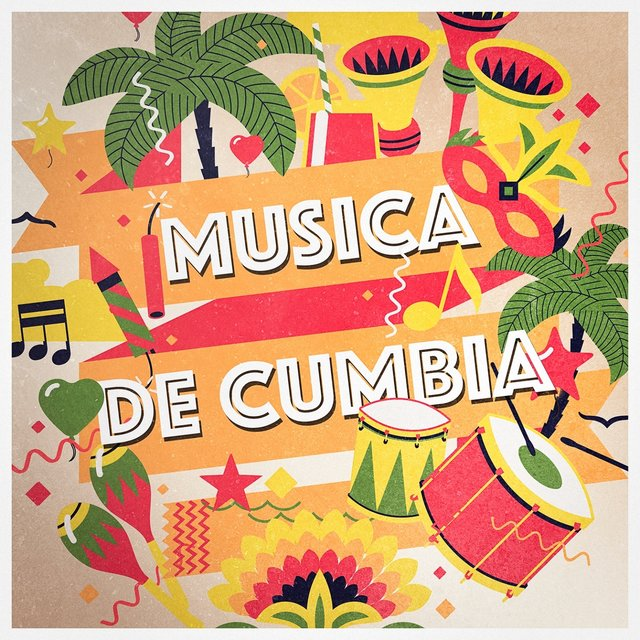

 Baile popular y género musical originario de Panamá, Colombia y otros países latinoamericanos, de movimiento lento y ritmo tropical, ejecutado por parejas que giran sin tocarse.
Rigo Tovar
Regresar a menú
 Rigo Tovar
Rigo Tovar